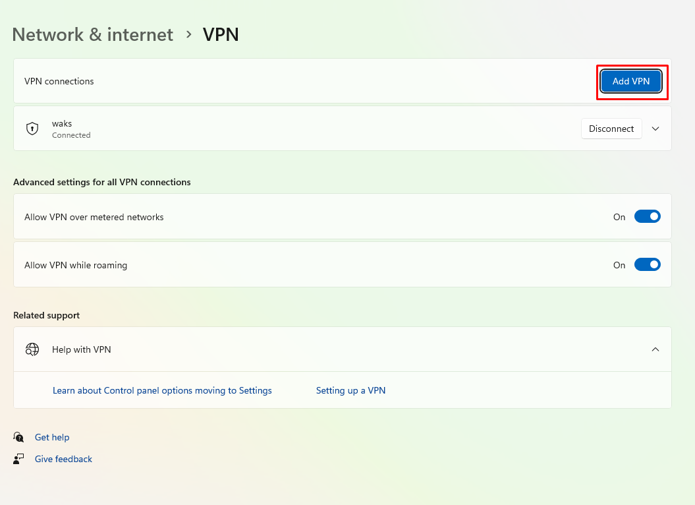
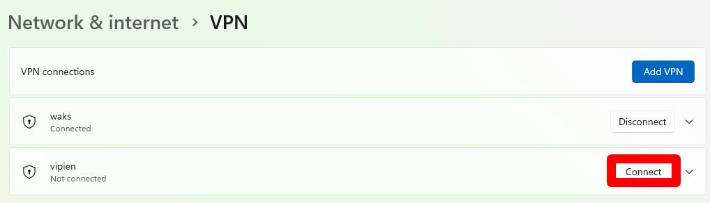

VPN PPTP (Point to Point)
Requirement
Disini kita akan membutuhkan 2 buah server, web+dns server dan VPN PPTP Server. Khusus VPN PPTP Server kita menggunakan 3 Network Adapter.
Apa itu VPN Server
VPN atau Virtual Private Network, merupakan teknologi yang menghubungkan antara jaringan private dengan jaringan Public. Seperti yang kita ketahui bersama jaringan private tidak dapat diakses melalui internet karena tidak terekspos secara publik, dengan menggunakan VPN Server kita dapat mengakses jaringan private melalui jaringan publik/internet. VPN juga berfungsi untuk menyembunyikan jaringan , sehingga client yang terhubung ketika melakukan akses internet, tidak terekpos di jaringan publik.
VPN server sendiri ada 2 tipe yang pertama adalah PPTP (Point to Point) tipe ini kita akan konek ke VPN server menggunakan Username dan Password. Dikatakan bahwa sejak tahun 2017 tipe ini sudah jarang digunakan karena memiliki celah keamanan, yang kedua adalah OpenVPN tipe ini lebih aman karena menggunakan pasangan certificate dan key.
Untuk pembelajaran kali ini kita akan menggunakan PPTP.
Setting web+dns Server
Setting ip dan Hostname
root@debianMaster:~# hostnamectl set-hostname webdns
root@debianMaster:~# exit
logout
useradmin@debianMaster:~$ su -
Password:
root@webdns:~#
# This file describes the network interfaces available on your system
# and how to activate them. For more information, see interfaces(5).
source /etc/network/interfaces.d/*
# The loopback network interface
auto lo
iface lo inet loopback
auto enp0s3
iface enp0s3 inet dhcp
auto enp0s8
iface enp0s8 inet static
address 10.10.10.1
netmask 255.255.255.0
Installasi Apache2
Setting DNS
root@webdns:~# apt install bind9 -y
root@webdns:~# cd /etc/bind
root@webdns:/etc/bind# nano named.conf.local
;
; BIND data file for local loopback interface
;
$TTL 604800
@ IN SOA tes.lan. root.tes.lan. (
2 ; Serial
604800 ; Refresh
86400 ; Retry
2419200 ; Expire
604800 ) ; Negative Cache TTL
;
@ IN NS tes.lan.
@ IN A 10.10.10.1
www IN A 10.10.10.1
Setting VPN Server
Setting IP dan Hostname
root@debianMaster:~# hostnamectl set-hostname vpn
root@debianMaster:~# exit
logout
useradmin@debianMaster:~$ su -
Password:
root@vpn:~#
# This file describes the network interfaces available on your system
# and how to activate them. For more information, see interfaces(5).
source /etc/network/interfaces.d/*
# The loopback network interface
auto lo
iface lo inet loopback
auto enp0s3
iface enp0s3 inet dhcp
auto enp0s8
iface enp0s8 inet static
address 192.168.10.1
netmask 255.255.255.0
auto enp0s9
iface enp0s9 inet static
address 10.10.10.2
netmask 255.255.255.0
Explaination
enp0s8 konek ke client sedangkan enp0s9 konek ke server webdns
Adding DNS Server
root@vpn:~# nano -c /etc/ppp/pptpd-options
##cari baris 58-59 uncomment dan rubah seperti dibawah ini
ms-dns 10.10.10.1
ms-dns 8.8.8.8
Explaination
Jadi ms-dns adalah DNS Server yang akan digunakan oleh client dari VPN server kita, sehingga client menggunakan dns server kita dan juga google.
Adding VPN User Accounts
# Secrets for authentication using CHAP
# client server secret IP addresses
user1 pptpd 1234 *
user2 pptpd 1234 10.10.10.26
Exp
Pada file ini kita bisa menentukan username,password dan juga IP yang akan didapatkan oleh client. Untuk tanda * maka client akan mendapatkan random IP dari pool remote IP, adapun setting remote IP setelah langkah ini.
Allocating Private IP for VPN Server and Clients
root@vpn:~# nano /etc/pptpd.conf
##Ke baris paling bawah kemudian ketikkan seperti dibawah ini
localip 10.10.10.2
remoteip 10.10.10.3-100
Exp
localip adalah ip dari vpn server, sedangkan remoteip adalah ip yang akan didapatkan oleh client. client akan mendapatkan ip dari 10.10.10.3 - 10.10.10.100.
Enable IP Forwarding
Explaination
Karena subnet dari client dan webdns berbeda maka kita butuh ip forward , sehingga tetap terhubung meskipun beda subnet.
Membuat koneksi vpn di client





Pengujian
Tes Ping 10.10.10.1 (webdns) di cmd
 Tes akses tes.lan di browser
Tes akses tes.lan di browser